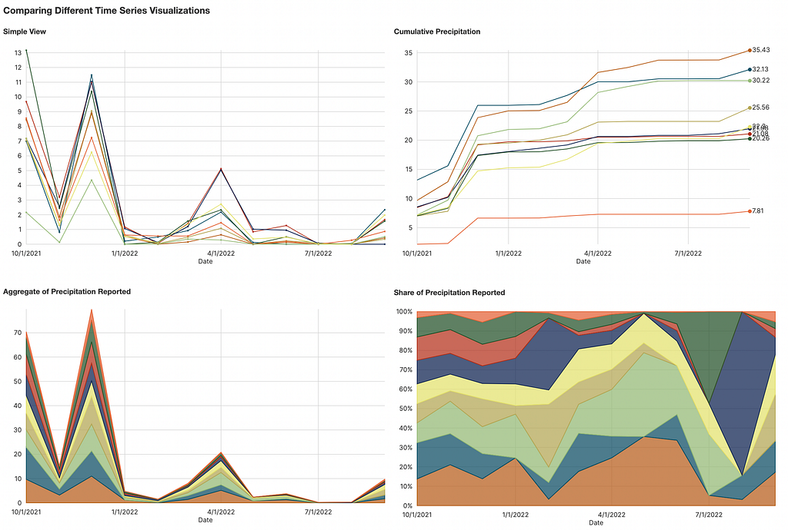
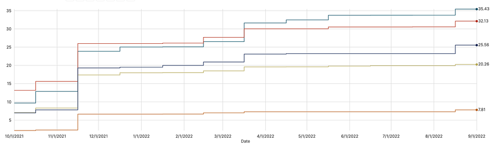
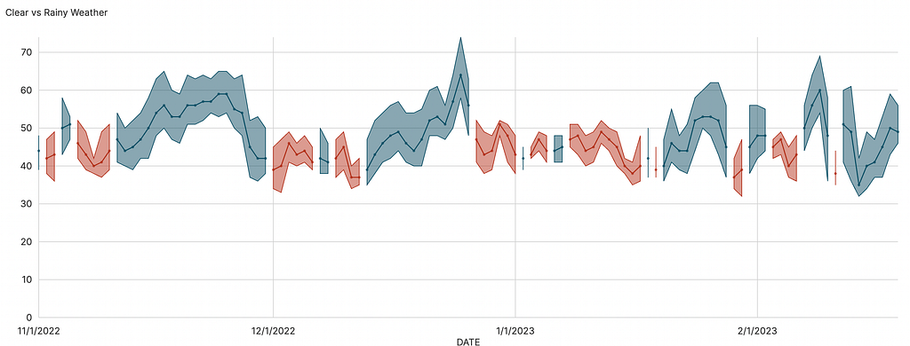
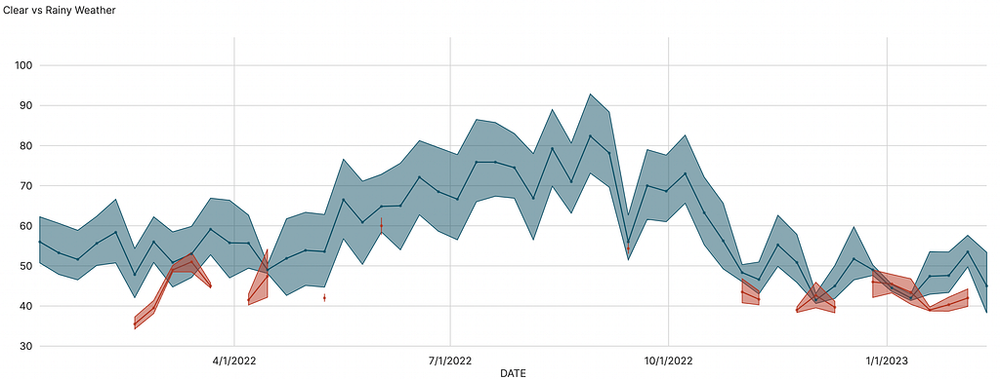
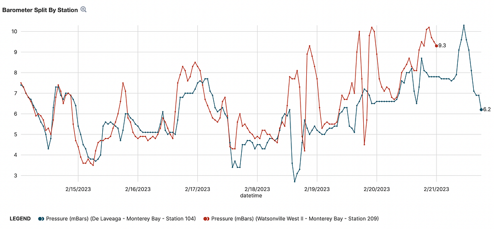
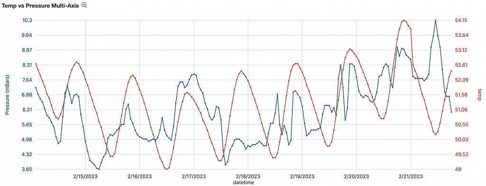

Change over time is a key area of analysis for any data that has time as a characteristic. And there is no more familiar, friendly and effective way of looking at change over time as the line chart. But there are variations — and decorations — of the line chart that can make it more effective at handling the different ways that patterns emerge in time series data. That’s why Noteable’s no-code visualization tool (what we call DEX) doesn’t just let you plot data on a line chart but in many different ways, which we’ll explore below using three different climate datasets.
All the screenshots you’ll see in this piece come from an interactive notebook that I explained as part of my weekly series of walkthroughs on how to use different charts effectively.

We’ll be referring to the lines in line charts as “series” because they’re not always lines, sometimes they’re filled areas.
Chart Variations
The dashboard below shows three different views into a simple 12 row monthly total of precipitation by weather stations in Northern California. We can plot these totals month by month using a line chart (top left) and see the peak values, but that’s not always the best approach.

- When the kind of time series data you’re looking at is something you want to see in aggregate by each point in time, use a stacked area chart (bottom left).
- If you’re looking at cumulative total over time, which is pretty common for precipitation, use a cumulative line chart (top right).
- For data where the scales are very different over time but what you want to see is the share of the total amount at each point, use a stacked percent chart (bottom right).
- You can also has a line percent chart (not shown) that can be effective with fewer series and less punctuated change than we have in this dataset.
Chart Decoration
The effectiveness of a time series visualization depends less on what you make and more on who you’re making it for. It might be that very busy charts are very effective, if they’re built for an invested audience focused on exploration. But if you want to create more explanatory graphics, you can take advantage of some options to make your chart more distinct and readable.

- Line Labels will place direct labels with the final coordinate value of the series (as seen below) or the series name (useful when each series has a relatively short name suitable for marginal rendering).
- Line Rendering allows you to adjust the style of a line chart from a jagged linear rendering (as you saw in the four charts above) to a curved line or, as we see below, a stepped line. Engage with your audience to find out which line rendering resonates with them the most and be aware for the strengths and weaknesses of each mode such as how they can draw over series with similar values.
Bounded Ranges
Sometimes your time series data is not a single metric or a set of competing metrics, but rather a primary metric with contextual metrics. That way of putting it sounds very exotic but it’s actually quite common:
- The minimum and maximum price a stock reached during a day is context for its opening or closing value.
- The certainty of a prediction, an experiment or of historical data in an ETL is commonly represented using percent variance from a reported value and provides critical context for decision-makers.
- The minimum and maximum temperature over the course of the day (as we see below) is an important signal in weather and climate, as well as being impactful in our day-to-day lives.

In order to make decisions about these contextual metrics, we need to be able to see them. These bounds can be:
- Absolute, meaning the contextual metric is in the same scale as the primary metric (our temperature data, for instance, is in the same scale).
- Relative, meaning the contextual metric is a percent of the primary metric (for instance if your dataset plotted average user time on site with ±15% for the majority of users).
Smoothing
If your x-axis is a datetime data type (or you have transformed it to one) then you can use smoothing options for your data. This includes averaging to a different period (changing daily to weekly or monthly data) or smoothing over a window (like a 7-day moving average). We can see below the very noisy daily temperature and contrast it with the smoothed weekly temperature.

Using Your Data as Its Own Context
You might have interesting dimensions (categories) that you want to use to split your line data. These might be overlapping (like time series data with a column indicating different sources for the data, as we see below with different weather stations) or discontinuous (you might have points that are labeled “actual” vs “predicted”). While there are interesting domain reasons to split data, there’s a consistent need to provide your readers with context, and oftentimes the best context is within the data itself between different samples, like comparing the reports of two weather stations in the same dataset below.

Multi-Axis
If you are displaying two metrics and those metrics are of dramatically different scales, then the visualization will be pretty unremarkable. The series with larger values will show patterns of change and the other will look mostly like a straight line. In those cases, you can activate multi-axis display (only available with line charts with two metrics displayed) and one axis will show the values of one series and the other will show values of the second series with the scale being normalized between them so you can see the patterns clearly and see times when there is a relationship between the relative changes.

Time Series Charts are As Simple or Complex as You Make Them
Line charts are so common that we might start to believe that time series visualization is simple. It’s not, and hopefully this exploration of different ways to see your time series data will help you to develop more compelling charts that let you explore and explain your data more effectively.
Understanding Change Over Time with Time Series Charts was originally published in Noteable on Medium, where people are continuing the conversation by highlighting and responding to this story.